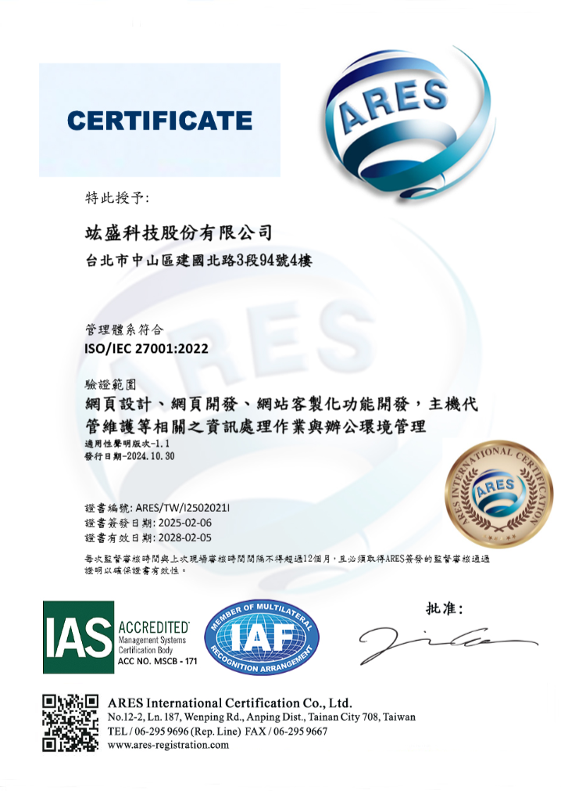
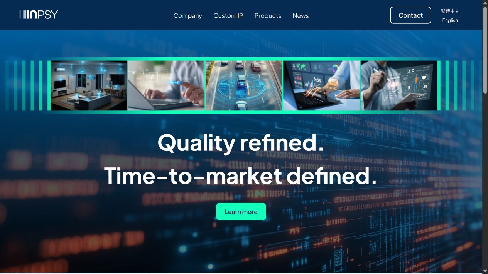

GENABOTGood to
connect.
聊聊需求
About CTK Pro.
SINCE2011.從手機 App 出發，
從手機 App 出發，
一路做到網站與長期維運。
把 UI/UX 的經驗，帶進企業網站、
後台操作與日常維護。
AI Agent 工作流程的早期實踐者
將 AI Agent 納入規劃、開發與日常工作，
重要判斷與交付品質由團隊把關。
上線後，持續合作
企業、品牌與公共服務網站的多年維運經驗，
持續處理內容、版本與技術問題。

ISO 27001:2022
資訊安全管理系統認證
把風險、檢查與處理紀錄納入日常。
A few ways we help.
從介面設計到上線維運，我們能協助的幾個環節。
| 常見的需求 | CTK 的工作 | 實際會做什麼 |
|---|---|---|
| 資訊很多， 怎麼讓人看得懂？ | UI / UX | 整理資訊架構與操作流程， 完成介面設計與前端開發。 |
| 網站與後台， 怎麼配合日常工作？ | Web / Systems | 建置企業官網、內容管理後台， 處理權限與 API 串接。 |
| 上線之後， 誰來持續照顧？ | Maintenance & Support | 主機代管與網站維運， 執行版本更新、弱點掃描與修補， 並持續提供技術支援。 |
從設計、開發到維運，依實際需要一起安排。
Technical stories, clearly told.
我們協助半導體與晶片資安品牌，整理技術、產品與企業資訊。

INPSY
中英雙語官網與投資人專區。
整合技術、產品與企業資訊的查找入口。
PUFsecurity
繁中、簡中與英文官網。
以動態首頁與內容架構呈現技術品牌。
左：INPSY 官網畫面。右：PUFsecurity 官網主視覺素材。服務內容為企業網站設計與開發。
What's on
your mind?
這次，最想一起聊的是什麼？
01 / THE GOAL最近在推進什麼？
最近在推進什麼？
最想先解決哪一件事？
02 / THE PEOPLE主要想服務
主要想服務
或溝通的對象是誰？
03 / THE SUPPORT
希望我們從哪一段一起幫忙？